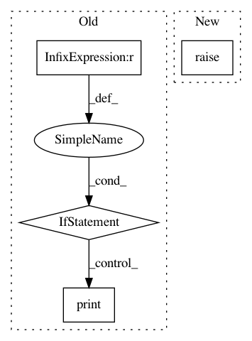

4b4946f40ef0f8c533f5473ec3756e639e57e5c5,python/mead/tasks.py,ClassifierTask,_setup_task,#ClassifierTask#,233
Before Change
if backend == "pytorch":
print("PyTorch backend")
import baseline.pytorch.classify as classify
elif backend == "keras":
print("Keras backend")
import baseline.keras.classify as classify
elif backend == "dynet":
print("Dynet backend")
import _dynet
dy_params = _dynet.DynetParams()
dy_params.from_args()
dy_params.set_requested_gpus(1)
if "autobatchsz" in self.config_params["train"]:
self.config_params["model"]["batched"] = False
dy_params.set_autobatch(True)
dy_params.init()
import baseline.dy.classify as classify
else:
print("TensorFlow backend")
import baseline.tf.classify as classify
from mead.tf.exporters import ClassifyTensorFlowExporter
self.ExporterType = ClassifyTensorFlowExporter
After Change
**self.config_params["loader"])
def _setup_task(self):
super(ClassifierTask, self)._setup_task()
if self.config_params["preproc"].get("clean", False) is True:
self.config_params["preproc"]["clean_fn"] = baseline.TSVSeqLabelReader.do_clean
print("Clean")
In pattern: SUPERPATTERN
Frequency: 3
Non-data size: 4
Instances
Project Name: dpressel/mead-baseline
Commit Name: 4b4946f40ef0f8c533f5473ec3756e639e57e5c5
Time: 2018-09-28
Author: dpressel@gmail.com
File Name: python/mead/tasks.py
Class Name: ClassifierTask
Method Name: _setup_task
Project Name: open-mmlab/mmdetection
Commit Name: d0fb2a8d63de0c59a11163650b9575bbc916df5e
Time: 2018-09-26
Author: chenkaidev@gmail.com
File Name: mmdet/models/detectors/rpn.py
Class Name: RPN
Method Name: init_weights
Project Name: open-mmlab/mmdetection
Commit Name: d0fb2a8d63de0c59a11163650b9575bbc916df5e
Time: 2018-09-26
Author: chenkaidev@gmail.com
File Name: mmdet/models/detectors/two_stage.py
Class Name: TwoStageDetector
Method Name: init_weights